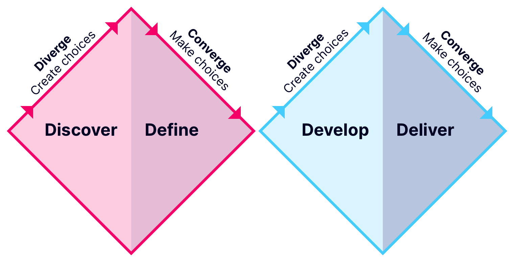

About Me
I’m a family man, lover of all things burrito, and a superhero movie aficionado. A Midwest native my entire life; I have a bachelor's degree from the Columbus College of Art and Design, and have been working in the central Ohio area for my entire career.
I'm a nerd at heart whether it's tinkering with computer parts in my basement, digging through bins at toy conventions, or diving deep into the lore of a new movie. I also have a passion for physical fitness and love exercising with my son at the crack of dawn before he catches the morning school bus.
How I work
My education in visual design and real-world experience in IT have served me well in the "wear many hats" career of product design. Since my core skills lie at the convergence of technology and design, I’m skilled at creating digital products and experiences with an iterative and data-driven approach. I'm equally comfortable amongst a group of developers as I am with designers; and I am ready to dive into challenges whether they are ambiguous, organizational, aesthetic or technical in nature.
I am fueled by being around talented people, and I aim to be equally inspiring to others on their professional development journey. I also am an advocate for design thinking, and love to give workshops introducing the concept and methodologies to stakeholders within organizations.

My ideal work methodology is the, as it provides the framework to iterate on the journey to solving problems. I feel equally comfortable drafting a research plan and interviewing subjects, as I do creating prototypes and building pixel-perfect design systems.
The
Design Council has a great writeup defining the components of the double diamond, but I can share some foundational elements of the approach here.
DiscoveryThis phase focuses on gathering data to fully understand the underlying challenges. Artifacts include interviews, ethnographic observations and research plans.
DefineMakes sense of the data from the discovery phase to help create a focused direction on a potentially reframed challenge. Outputs include personas, journey maps, empathy mapping, etc.
DevelopExplore solutions, new possibilities and test ideas. Work for this phase consists of "How might we..." questions, crazy eights, role playing, storyboards, etc.
DeliverTake the learnings from the testing in the develop phase and focuses on refining the ideas and delivering on solutions.
Competencies
Skills
Interaction design
Prototyping
Visual design
Design systems
Usability research
Accessibility
Workshops
User interviews
Mentorship
Tools
Sketch
Adobe CS
Figma
Axure RP
Webflow
Optimal Workshop
Typeform
Google Analytics
Technology
HTML
CSS
SASS
jQuery UI
Testimonials
I’ve had the pleasure of working with some very talented folks throughout my career. Here are some of the kind words they shared about their experience working with me.
Amanda Raupple
Design Director
It was a great experience to have Phil on my team at McGraw Hill. Our group's initiative was unique in that it was the perfect mix of an ambitious but aggressive challenge. Phil undoubtedly rose to the occasion and exceeded expectations. He is a pro at navigating ambiguity, taking a user-centered approach to design, and synthesizing complex project inputs into clear stakeholder presentations. His presentation skills are outstanding! He consistently fostered a shared team understanding and a clear path forward. And most importantly, Phil is a team player that nurtures a positive and productive culture.
David Roe
Product Design Manager
Phil has a great depth of user experience design knowledge. His ability to work independently and with ambiguity was a great asset to our innovation efforts where he continuously brought software design ideas to life through design, prototyping, and research. He has a mastery of design tools and methods that would be an asset to any software design team.
Brian Prescott
Senior Software Engineer
I really enjoyed working with Phil. His attention to detail and wide range of skills were always what I and the company needed, and our products were always better for Phil's efforts. Many of his ideas and designs went far above and beyond the call of what we were asking for, and led us to take our products in new and different directions. I would highly recommend Phil, as his creative touch is truly unique.